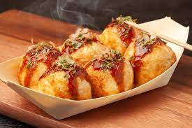

Takoyaki

Description
These eight pieces of cheese-covered
takoyaki have a flavorful blend of
sauce and cheese that's irresistible.
Ingredients
- Eggs
- Flour
- Dashi(Japanese stock soup) powder
- Soy sauce
- Octopus/tako
- Green onions
- Powdered seaweed
- Cheese
Steps
- Mix:Mix the batter.
- Prep:Prep the fillings.
- Pour and fill:Pour batter in greased pan.
- Filp:Turn takoyaki 90 degrees.
- Sauce:When crisp, pop them out and brush with sauce and grate some cheese.